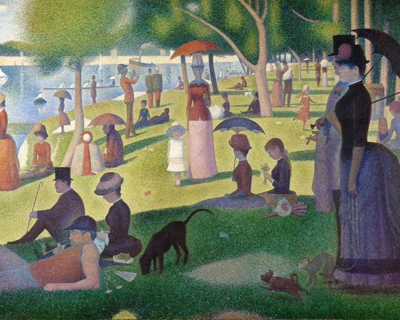

Île de la Grande Jatte
Des glaneuses

One of Vincent van Gogh's most famous works, it was painted in 1889 at a nursing home in Saint-Rémy and is currently owned by the Museum of Modern Art in New York.
A Sunday afternoon on the Île de la Grande Jatte is a work by French neo-impressionist painter Georges Seurat. It is an oil painting on canvas and its size is 207х308cm. It was produced from 1884 to 1886 and is currently housed in the Art Institute of Chicago in the United States.
This is an oil painting completed by Jean-François Millet in 1857. It is currently housed in the Musée d'Orsay in Paris, France. This is an oil painting depicting three women gleaning grains from a wheat field after harvest.